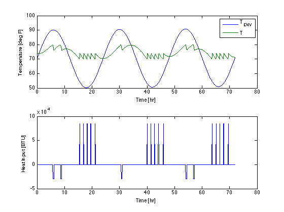

Thermostat Simulation
Thermostats are commonly used devices in commercial and industrial applications. Thermostats are reliable, easy to install and operate, and work well enough in situations where maintaining temperature within a small range is acceptable control performance.
The challenge of simulating systems controlled by thermostats is that they exhibit hysteresis. The current system temperature, alone, is not sufficient to determine if the thermostat is in the 'off' or 'on' state. Thus the thermostat also has a state that must be tracked in any simulation.
Here we demonstrate a simple modeling technique for this situation. The thermostat is modeled as a 'bistable' device with two stable states, 0 and 1, corresponding to 'low' and 'high'. The state of the bistable device goes high when then input is above a threshold, and goes low when the input is below a threshold. Otherwise it retains its current state.
In this demosntration we implement thermostats to control a house furnace and air-conditioning unit.
Contents
Parameters
Cp = 2500; % House heat capacity [BTU/degF] UA = 400; % House heat transfer [BTU/hr/degF] Qh = 85000; % Furnance capacity [BTU/hour] Qc = 30000; % Air conditioning capacity [BTU/hour]
Time-varying external temperature
Tenv = @(t) 70 + 20*sin(2*pi*t/(24*365)) + 20*sin(2*pi*t/24);
Bistable dynamics
The bistable device switches to a value 0 when T < TL, and to 1 when T < TH. For intermediate temperature TL <= T <= TH the state remains stable at either 0 or 1.
bistable = @(z,T,TL,TH) 1000*(-2*z^3 + 3*z^2 - z - (T<TL)*z + (T>TH)*(1-z));
Temperature Dynamics
The heating thermostat turns heat on when thermostat is in the low state. The cooling thermostat turns air conditioning on when in the high state.
dT = @(t,T,zh,zc) (UA*(Tenv(t)-T) + Qh*(zh < 0.5) - Qc*(zc > 0.5))/Cp; dzh = @(t,T,zh) bistable(zh,T,70,74); % Furnance Thermostat dzc = @(t,T,zc) bistable(zc,T,76,80); % Air Conditioning Thermostat
Assemble
f = @(t,x) [dT(t,x(1),x(2),x(3)); dzh(t,x(1),x(2)); dzc(t,x(1),x(3))];
Solve
The thermostats and house have widely different time scales. As such, this system requires a solver capable of handling a 'stiff' system of differential equations.
ic = [70; 0; 0]; tspan = [0 72]; soln = ode15s(f,tspan,ic);
Display
T = @(t) deval(soln,t,1); zh = @(t) deval(soln,t,2); zc = @(t) deval(soln,t,3); t = linspace(min(tspan),max(tspan),1000); subplot(2,1,1); plot(t,Tenv(t),t,T(t)); legend('T_{ENV}','T'); xlabel('Time [hr]'); ylabel('Temperature [deg F]'); subplot(2,1,2); plot(t, Qh*(zh(t)<0.5) - Qc*(zc(t)>0.5)); xlabel('Time [hr]'); ylabel('Heat Input [BTU]');